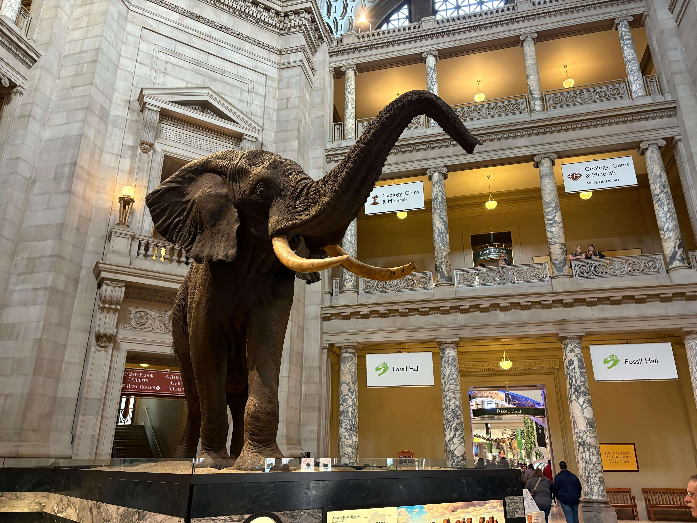

The National Museum of Natural History, part of the Smithsonian Institution, offers visitors an extraordinary opportunity to explore the natural world and the history of life on Earth. Its extensive collections bring together fossils, minerals, rocks, plants, and wildlife specimens that help explain the remarkable diversity of our planet. The exhibitions cover a wide range of subjects, from prehistoric life and the evolution of species to human origins, ecosystems, and the geological forces that have shaped the Earth. Among the museum's highlights are its dinosaur fossils, impressive mineral displays, and exhibits about the relationship between humans and the natural environment. Each gallery presents a different perspective on the scientific discoveries that have expanded our understanding of the world. These photographs capture my visit to one of Washington, DC's most fascinating museums and its remarkable collections.
Explore my photographs from the National Museum of Natural History, featuring its exhibitions, scientific collections, fossils, minerals, and the fascinating details of the natural world.
View All Photos ↗